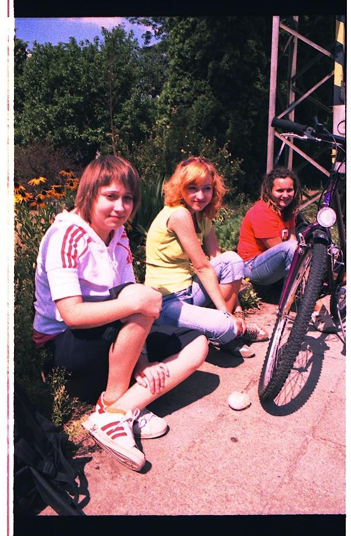
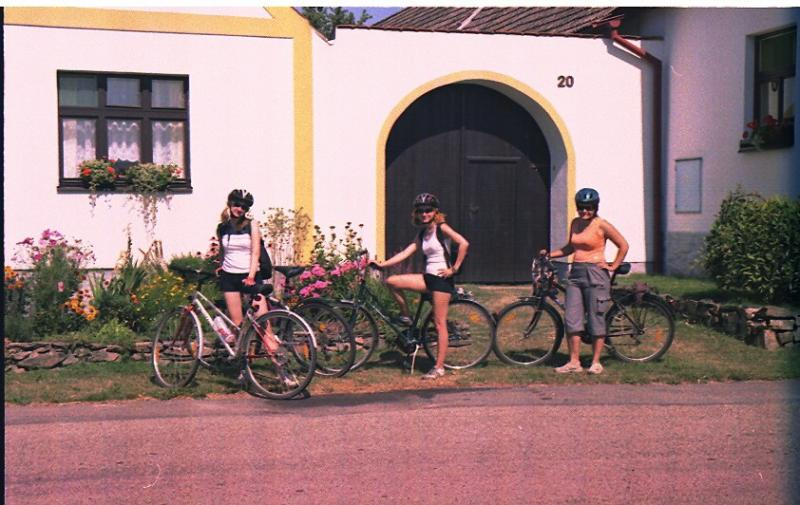
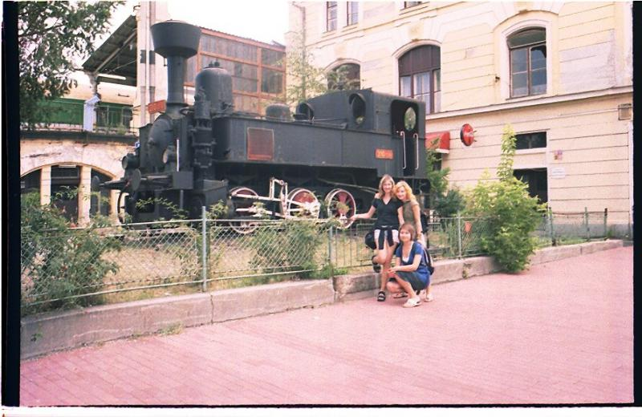
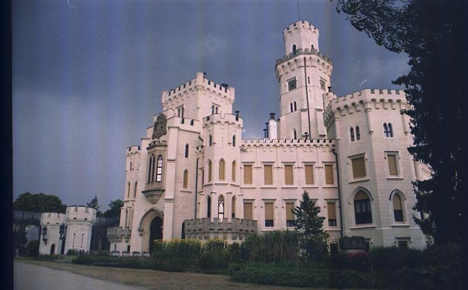
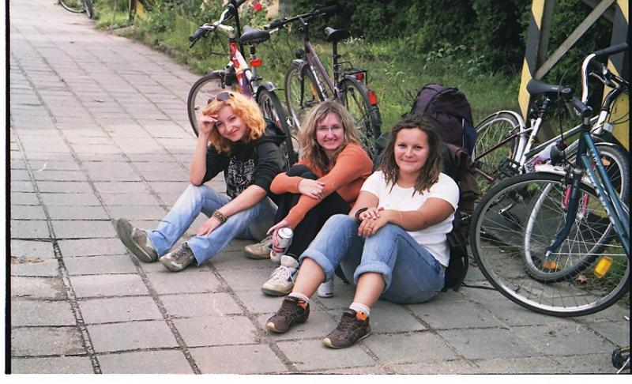
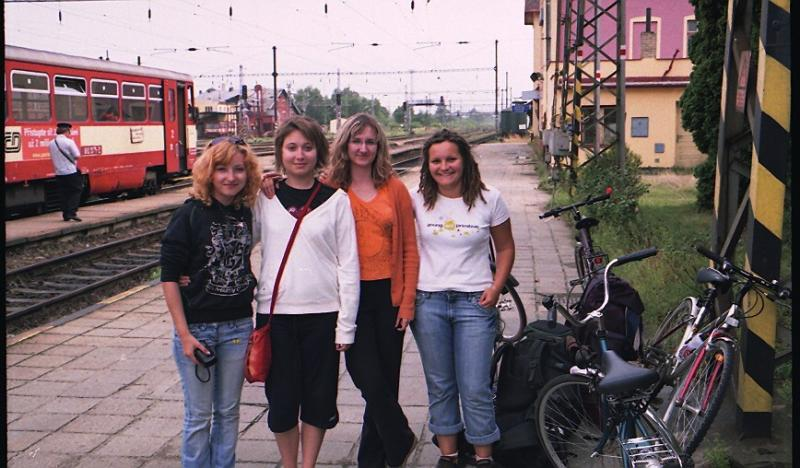

Aby tady na blogísku konečně něco pořádného bylo, zahrabala jsem v útrobách počítače (na psaní něčeho nového a aktuálního momentálně v zápalu studia není moc času) a objevila opravdové retro :D - “palubní deník” naší dámské jízdy po krásách jižních Čech, léta Páně 2007 :). Nechtělo se mi to po sobě popravděřečeno moc číst, tak doufám, že tam nebude moc gramatických ani stylistických chyb. Přeju příjemné počtení !!
Motto: „Správná cesta nemá konec, jen návrat…“ (Jan Jícha, guru naší dovolené ;-))
Sobota, den první :)
Naše první dovolená bez rodičů si hned odzačátku přivlastnila všechny katastrofické scénáře, jaké si jenom lze představit. Tři dny před odjezdem mi psala Monika, že má chřipku, Pavča,že nemá peníze a já jsem se popravdě taky potácela po domě s palestinou omotanou kolem krku a termoskou mátového čaje pod paží. Po každé náročnější společenské akci jsem totiž nevysvětlitelným způsobem přišla o hlas, v tom lepším případě mi pouze klesnul můj soprán o pár tónin dolů…:-) Byla to sice z těch všech tragédií ta nejmenší, leč přesto mě naplnila pochybnostmi, zda se do této akce vůbec pouštět, když už se nám to od začátku takhle pěkně…:-p. Na naší první dámskou jízdu jsem se ale těšila takovým způsobem, že teď - 3 dny před odjezdem prostě nešlo couvnout a vykašlat se na to. Vidina sladkého týdne stráveného bez jakéhokoliv dohledu daleko od domova a s partou těch nejlepších lidí, které jsem na gymplu poznala, byla mou největší motivací, když jsem se v dubnu učila k maturitě. Měla to být dovolená snů O:)…alespoň tak jsem si ji malovala nad chemickými rovnicemi a učebnicí latinské anatomie, které mi sice nakonec byly obě úplně k ničemu, protože jsem v září měla nastoupit na práva…ale to je jiná historie :). „Holičky“,jak jsme celou akci pracovně nazvaly, pro nás prostě ztělesňovaly událost tohoto nekonečně dlouhého léta a třeba i poslední možnost, jak strávit prázdniny v naší staré gymplácké sestavě. Naší výpravě měl dodat nádech dobrodružství fakt, že jsme se rozhodly vyrazit na aktivní dovolenou a vzít si s sebou kola (tímto bych chtěla pozdravit České dráhy 8-)…
Dnu D pochopitelně předcházely rozsáhlé přípravy. My s Terkou například 14 dnů brigádničily coby instruktorky na táboře v Jablůnce, abysme si každá vydělaly litr (který jsem byla stejně nucena vysolit, ještě než dovolená vůbec začala, za cyklistickou helmu). Zbytek poplatků pokryly peníze postupně vyžebrány od všech rodinných příslušníků a půlroční úspory, které jsem s těžkým srdcem vydolovala z útrob své pokladničky O:-).
Protože naše sestava byla čistě dámská, balení krosny se pro nás stalo velkou událostí a důvodem navíc, proč trávit po večerech na ICQ ještě více času než normálně - abychom si mohly vzájemně porovnat velikost i obsah našich zavazadel a poslat si seznamy, pečlivě naťukané do Wordu.
I přes prvotní komplikace jsme se nakonec toho nádherného srpnového rána všechny čtyři sešly na vlakovém nádraží v Kojetíně, odkud odjížděl náš rychlík Rožmberk, který nás měl dovést i s kolama až k cíli naší výpravy, do jižních Čech. Představa to byla krásná, ovšem realita poněkud krutá. Tak jednak nás málem vyhodili z vlaku i s kolama ještě v Kojetíně, neboť jsme pro naše bicykly neměly zakoupenou místenku…to nám paní u okýnka jaksi pozapomněla sdělit a prodala nám pro ně jenom 4 jízdenky, takže málem došlo na ten úplně nejhorší scénář a naše báječná dovolená by byla bývala skončila ještě dřív, než mohla vůbec začít. Po této zkušenosti jsem každopádně velebila do nebes České dráhy (pravděpodobně poprvé a naposledy za celý týden), neboť náš vlak měl zpoždění a musel se z kojetínského nádraží co nejdřív odlepit - jen díky tomu nás průvodčí nevyhodil i s kolama na tvrdý beton nástupiště. Po prvním průšvihu jsme si každopádně mohly gratulovat, ukecaly jsme to :)!
Vzápětí jsem se vydaly řešit druhý problém - najít si volné kupé s pohodlnými sedadly a úložným prostorem pro naše zavazadla…že jsme strávily plných 6 hodin jízdy v uličce u záchodků asi nikoho nepřekvapí 8), až do Českých Budějovic totiž zabíral většinu rychlíku porůznu roztroušený dětský tábor. Cestu nám navíc měla od Náměště „zpříjemňovat“ banda třicátníků v cyklistických dresech, kteří kolem nás každou chvíli courali na WC, aby si mohli nerušeně zakouřit. Při té příležitosti se s námi pochopitelně snažili navázat kontakt a vnucovali se s flaškou Tullamorky, celí žhaví se seznamovat. My už tak žhavé teda nebyly :)). Pánskou společností bychom samozřejmě za normálních okolností nepohrdly, ale tito pánové jednak nespadali do naší věkové kategorie a jednak nám bylo blbě samo o sobě z té zdlouhavé jízdy - i bez Tullamorky… Cyklisté nicméně neúnavně popíjeli a když už se první flašce koukali na dno, bez rozpaků z batohu vzápětí vybalili druhou.Teď už courali na záchod snad každých 5 minut a hrozilo, že na nás dřív nebo později někdo z nich šlápne (protože s vratkým krokem se překážková dráha našich natažených těl mohla zdát poněkud složitějším problémem než za střízliva), případně na nás zhůry spadne něco mnohem horšího…Vysvobození naštěstí přišlo někde u Jihlavy…ne že by snad pánové hodlali vystoupit, v takový zázrak jsme opravdu nemohly doufat, ale objevila se společnost na první pohled vstřícnější než ta naše.Usadila se v uličce mezi námy a pány cyklisty, vybalila kytaru a lahváče a seznamovačka mohla proběhnout nanovo. Třicátníci už sice pravda neměli co nabídnout, druhá lahev Tullamorky byla v nenávratnu, ale očividně jim to nedělalo vrásky a přistoupivší partu pochybně vyhlížejících hipíků ochotně vzali mezi sebe. My po zbytek cesty mastily na koleně karty a nevzdávaly se vidiny, že naše dovolená bude zkrátka báječná…ikdyž nezačala nijak slavně,co si budem namlouvat ;)…
Konečnou pro nás znamenala cedule Veselí nad Lužnicí, kde už nás měl čekat motorový vláček až do Třeboně. Ovšem ani tento poměrně snadný přesun se neobešel bez kolize. Než jsme stačily vyzvednou kola ze speciálního úložného prostoru, motorák, kterému přistavili pouhé 2 vagony, už byl plný až po střechu, protože se jím do Třeboně nejspíš hodlala dopravit i s kolama dobrá polovina našeho rožmberského rychlíku…Ať žijí České dráhy !
No a tak nás čekala první hodinka a půl do odjezdu dalšího vlaku směr Třeboň, strávená v městečku Veselí nad Lužnicí, které se pro nás mělo na příští týden stát málem druhým domovem :-p… Nápad nahodit krosny na záda a oněch 20 kiláčků do Třeboně ujet jako rozehřívací kolo pro náš cyklistický týden se neujal, všechny už jsme toho měly za celodenní trmácení plný kecky. Rozhodly jsme se, že zakempíme přímo pod stožárem vysokého napětí s výstražnou žlutou cedulí :). V posledním tažení jsem se skácela na obrubník a jala se dopovat svou pravidelnou dávkou Bromhexinu, kterou jsem se snažila organizmus dostat z nejhoršího.Terka se pokoušela pozvednout všeobecnou náladu pořizováním několika vskutku zničujících snímků, kterak si hrajeme na Veselském nádraží na bezdomovce :).

Na veselském nádraží…
Po půlhodince strávené házením barevným létajícím talířem jsme kapitulovaly a neomylně zamířily do hospůdky přes cestu. Fešný číšník nás každou obsloužil půllitrem Krušovic, pravděpodobně jsme byly jeho největší tržba za celý den. Veselí vypadalo na pěknou díru, takže se nebylo čemu divit. Prostředí hospodské zahrádky bylo rozhodně po všech směrech příjemnější a pohodlnější než tvrdý obrubník na vlakovém nádraží - pokud teda pominu fakt, že jsme se po půlhodině odebraly do útrob podniku hledat místnost zvanou záchod a narazily přitom na obtloustlého dědulu, bezpochyby místního štamgasta, který vyzvídal, odkud jsme přijely a oslovoval nás „pionýrky“. Poté, co se vratkým krokem vybelhal na zahrádku a tvářil se, že by nám rád dělal společnost, jsme radši zaplatily naše půllitry a zvedly kotvy :)). Na náš motorák jsme naštěstí už nemusely dlouho čekat, za chvíli jsme s kolama i krosnama seděly ve vagoně a padala na nás únava. Jen zázrakem se nám podařilo naši zastávku Třeboň-lázně nepřejet, denní příděl průserů už byl očividně vyčerpán…Tam na nás čekal nejspíš poslední úkol dne - najít penzion Na Holičkách, který dal pracovní název celé naší dovolené. Za pomoci Terčiny mapy Třeboně a okolí, předvídavě zakoupené ještě doma na Moravě :)), jsme nakonec zvládly i poslední část dnešní cesty a ani ne za půl hodiny už jsme si prohlížely náš nový domov ležící poblíž hlavního tahu na Vídeň :). Majitelé penzionu - mile vyhlížející manželé Kročákovi :) - nám ukázali náš apartmán číslo 1, svěřili nám svazek klíčů a přenechali vlastnímu osudu. Padly jsme na postel a užívaly si euforie, že už se do zítřka nemusíme ani hnout…
…než nám došlo, že lednička v kuchyni je úplně prázdná (což nám sympaticky připomnělo atmosféru domova), svačinky zabalené na cestu dávno zlikvidovány, a tak nám asi nezbude nic jiného, než se vydat do města na nákup.Převlíkly jsme se a usoudily, že pro dnešek ještě necháme kola odpočívat, takže jsme vyrazily do Třeboně pěkně po svých. Cestu jsme si zkrátily cyklostezkou vedoucí mezi poli.Trefit do města až takový problém nebyl, ale NATREFIT na otevřenou sámošku v sobotu navečer se ukázalo jako slušný oříšek.V Čechách očividně šetří na směrových tabulích a orientačním značení jako takovém, jak jsme měly už brzo zjistit ;-)…zatímco u nás v KM se cedule upozorňující na Hypernovu táhnou celým městem jako morová nákaza, do Třeboně tenhle trend pravděpodobně ještě nestačil dorazit. Mluvící informační tabule nám poskytla jen velmi chabé vodítko, kterým směrem se zhruba máme vydat. Nakonec se nám podařilo spíš náhodou natrefit na zastrčenou intersparovskou večerku s pochybným sortimentem, ale nechtělo se nám už táhnout nikam dál, takže jsme vzaly zavděk tím, co zrovna bylo po ruce. Koneckonců Dobré hostince a čaj mají všude…a my nic lepšího stejně neuvaříme :-D…
Neděle, den druhý :-)
V duchu pravidla, že na dovolené si má člověk především odpočinout (byť jsme s sebou tahaly přes půl republiky kola, abysme mohly prožít aktivní týden :)), jsme nevstaly dřív než v jedenáct. Po zimprovizované obědo-snídani a nezbytné ranní hygieně jsme se vyhrabaly z apartmánu, narazily přilby na hlavu a vyrazily vstříc prvnímu okruhu. Nejsme žádní troškaři, takže jsme si rovnou vybraly trasu naučné stezky s všeříkajícím názvem „Okolo Světa“…hm, pravda je taková, že jsme ji zvolily spíš než kvůli názvu proto, že její délka byla sympatických 11 kilometrů a my se potřebovaly na něčem nenáročném rozjezdit a zhodnotit svou kondici :). Sotva jsme stačily vyjet z Třeboně, nešlo neocenit mimořádně kvalitní značení cyklostezek v širém okolí…po několikaminutovém objíždění parku patřícího k hotelu Aurora jsme (opět čirou náhodou) narazily na tabuli označující začátek naučné stezky. Během cesty došlo na naše poměry jen k několika málo potížím :), po menším incidentu se psím agresorem bez náhubku jsme se potýkaly s nerovností vozovky a upadla na nás deprese, že cesta kolem Světa povede celou dobu po poli. (A kde jsou ty asfaltky, o kterých psali v cykloatlase ??) První zastávku jsme udělaly na okraji lesa, kde jsem málem zahučela i s kolem z úzkého mostu přes jakousi močůvku. Když už jsem se táhla na první trasu i s foťákem, nezapomněla jsem chvilku, kdy všichni vypadáme vesměs aktivně (jaké divy udělá kus plastu naražený na hlavu ;) zvěčnit do našich albíček, zdlábly jsme každá jednu tatranku na cesty a rozhodly se pokračovat v krasojízdě. Následující úsek naučné stezky vedl lesem (skoro mě to svádí napsat PRAlesem :)) a kolem močálů s léčivým bahýnkem J. Jen ty kořeny v cestě trochu vadily 8-)… Suma sumárum jsme ale celou trasu ujely v dobrém čase a nijak zvlášť nás to nezmohlo.Okruh jsme zakončily u Schwarzenberské hrobky, mimořádného architektonického díla :D…Po včerejším vzoru jsme se doma opět odbyly rychlou večeří a zalehly do peřin. A navzdory našemu předsevzetí okusit třeboňský noční život jsme v deset hodin spaly jako nemluvňata, tak snad zítra…:)
Pondělí, den třetí :)
I po víkendu nám naštěstí počasí ještě přálo, takže jsme se rozhodly v pondělí uskutečnit nejdelší a nejnáročnější okruh s názvem Okolo Třeboně…krom toho jsme se konečně chtěly dozvědět, jestli se tu ty koně pasou nebo ne, protože jsme tu zatím narazily jenom na krávy :). Za tím účelem jsme se pochopitelně musely přinutit vstát dřív než obvykle…takže v deset hodin už jsme vyrážely z Holiček. Krásné počasí očividně vylákalo na kola spoustu dalších nadšenců, ale ne každý toho ten den zažil tolik co my ;)…První úsek cesty probíhal v poklidném tempu, zastavovaly jsme se jen abysme se podle mapy ujistily, že jedeme dobře, a případně si prohlídly zajímavosti v okolí.Takovou první pauzou pro nás byl psí hřbitov :). Hrobečky roztroušené po lese ve mně nicméně evokovaly atmosféru hororu Záhada Blair Witch, a tak jsme radši honem zase nasedly na kola a nechaly psí hřbitov daleko za sebou. Stezka byla hodně pestrá, chvilku jsme jely po asfaltce, lesem, kolem rybníků, pak jsme zase projížděly nějakou tou jihočeskou vískou…v jedné z nich jsme udělaly polední pauzu. Dočetly jsme se na ceduli naučné stezky, že se jmenuje Lutová, a je jednou z nejstarších v okolí Třeboně, každopádně víc nás ohromil fakt, že tudy jezdí dokonce i autobusy hromadné dopravy, a tak jsme se uchýlily na prázdnou zastávku, abychom tam mohly nerušeně poobědvat :). Po pořízení několika usvědčujících snímků jsme už zase byly celkem ready pokračovat v cestě, ikdyž po takhle dlouhé pauze a s plnými žaludky se nám na kola nenasedalo zrovna moc zlehka. Oběd (několik kusů v batohu rozdrceného pečiva s paštikou Májkou, která během cesty přešla do pochybně tekutého stavu, a nezbytná tatranka) nás ale nakopnul, takže se nám podařilo v rekordním čase a mimořádném tempu dorazit do sousední vesnice Stříbřec, kde jsme se rozhodly smočit nožičky v rybníku u cesty.

Stříbřec
Smůla se nám začla lepit na paty až ve vesnici s poetickým názvem Stará Hlína. Krom toho, že nás uvítala libá vůně linoucí se z kravína, jako vystřiženého z trilogie Slunce, seno, Terka navíc zjistila, že asi píchla duši. Utěšila nás směrová tabule, která slibovala, že od Třeboně nás dělí nějakých 5 kiláků. Terka dofoukala kolo, nasedly jsme a rozhodly se neohroženě pokračovat v jízdě rovnou za nosem. Trasa vedla přes lesní cestu plnou šutrů - to by nás už nepřekvapilo, ale když jsme dobrou půlhodinu nepotkaly ani živáčka natož tabuli naučné stezky, začalo nám to být podezřelé. Rozhodly jsme se na kraji lesíka zastavit a poradit se s mapou. Při té příležitosti se mi na nohu skácelo Moničino kolo, které (nevybavené stojanem) se opíralo o to Pavčino a nezapomnělo ho při pádu vzít s sebou. Za lesem se před náma vyloupla jakási víska. Podle mapy to měla být Nová Hlína, ovšem realita byla poněkud jiná…realita se jmenovala 10 kiláků, které jsme najely zbytečně a úplně blbým směrem a pořád ještě nějakých 5, které musíme ujet domů, nedostatek pitné vody, píchlá duše a tržná rána přes půlku mojí nohy :))…na optimismus už si nikdo z nás netroufal. Nezbývalo než to otočit a stejnou hrbolatou cestou, jakou jsme sem přijely, se vrátit až do té prokleté Staré Hlíny, která aktivovala naši pravidelnou dávku průšvihů. Když už jsme tam byly, rozhodly jsme se dát si v hospůdce na rozcestí naši moravskou Kofolu, kterou tam kupodivu točili (aspoň něco) a psychicky se připravit na poslední úsek našeho celodenního výletu. Ten už proběhl kupodivu celkem v poklidu - projely jsme Novou Hlínou, minuly kousek rybníka Rožmberk, kam jsme se chystaly ve čtvrtek, a to už byla Třeboň naštěstí na dohled. Za dnešní výkon jsme si vážně zasloužily vyznamenání - jsme machři :) !!!
Po návratu z náročné cesty jsme zjistily zvláštní věc - na noční život dnes kupodivu máme energii, ale ne chuť. Místo toho si večer zabereme posezení před penzionem a hrajeme mikádo. Naděláme kolem toho strašného řevu a manželé Kročákovi z nás nejspíš mají druhé Vánoce. Zábava neupadá ani tehdy, když se ze zahrádky přemístíme zpátky do soukromí našeho apartmánu. Kročákovi, jejichž byteček tušíme někde nad tím našim, se nejspíš tuhle noc z našich inspirativních debat hodně přiučí :D…
Úterý,den čtvrtý :-)
Třetí den aktivní činnosti - to je vždycky krize.Abysme se té krizi vyhnuly (při našem štěstí by nás nemohla minout), rozhodly jsme se úterý strávit v Jindřichově Hradci, o kterém jsme se na internetu dočetly, že vlastní aquapark se slušným počtem atrakcí - tobogán, skluzavky a hlavně masážní trysky (to nás navnadilo nejvíc). O programu dne bylo rozhodnuto.Cestou jsme ještě nakoupily asi třicet pohledů pro naše kamarády, lásky, kantory a rodinné příslušníky :) a vydaly se na vlak. Ani dnes jsme si neodpustily strávit nějakou tu příjemnou chvilku na nádraží ve Veselí - vždy když tudy projíždíme, nemůžeme jinak a aspoň na pár minut se tu zdržíme :-p…Jindřichův Hradec na nás zezačátku udělal dobrý dojem (na nádraží mají nahranou znělku „Okolo Hradce“ :-)),ale pak už se to vezlo ;-)…Vydaly jsme se po stopách mapy města, protože jsme neměly tušení, kde ten jejich slavný aquapark vlastně hledat. Naštěstí nás hned na nádraží uhodila do očí zelená tabule informací, a tak jsme tam rovnou zamířily, že se teda zeptáme.
„Aquapark ???“ Paní za okýnkem na nás vrhla pohled, jako bychom si snad celé koupaliště i s tobogánem právě vymyslely…Usoudily jsme, že „aquapark“ bude poněkud nadnesený výraz pro podnik, kterému místní obyvatelé zřejmě říkají prostě - „bazén“…nicméně nabídla nám aspoň malou mapku Hradce a doporučení zajet tam busem, protože je to prý celkem štreka. Nevěřily jsme jí už ani slovo a po vlastní ose se vydaly přímo do centra.Usoudily jsme svorně, že každý civilista toho ví víc, než tyhle kozy z informací :). Hradec naštěstí není žádná metropole, velikostí by možná tak mohla konkurovat naší Kroměříži, takže nějaké bloudění nehrozilo. Dokonce jsme se během cesty stihly zastavit na náměstí na zmrzlinu a já si na vietnamské tržnici koupila nové sluneční brýle, protože ty, s kterýma jsem přijela, bohužel nepřežily výlet „Okolo Světa“ :). Cestou jsme si taky do alba nafotily místní hrad, kde prý straší bílá paní :), a zanedlouho už se před námi vyloupla hlavní atrakce, za kterou jsme do Hradce přijely - onen slavný aquapark. Sotva jsme si koupily studentské vstupenky, převlékly se do plavek a našly si pěkný plácek přímo u bazénu, vrhly jsme se za osvěžením do vody. Masážní trysky poněkud zklamaly, protože jsme nepřišly na systém, jakým se zapínají :(…snažily jsme se to sice odkoukat od ostatních, ale když jsme nezpozorovaly žádný výsledek, vzdaly jsme to a radši si šly zařádit na skluzavky a do „umělé vlny“, kde jsme se s holkama opravdu dobře bavily a Terka nás - nic netušící - u toho tajně fotila :D. Když jsme se dostatečně vyčvachtaly, šly jsme se zase na chvilku osušit na břeh a věnovat se nějaké záslužnější činnosti jako čtení Bazaaru, Jíchy :), focení, masáži zad a především psaní pohledů našim blízkým. Relaxační den uplynul moc příjemně a z bazénu nás vyhnal až hlad. Zašly jsme si tedy nahoru do restaurace na proklatě nezdravý langoš a pívo :)…Pak už jsme usoudily, že je nejvyšší čas jít, abysme si cestou na vlak ještě stačily nakoupit jídlo v některém z místních hypermarketů. Nálada během zpáteční cesty poněkud upadla, byť jsme se snažily pozvednout si ji karetní hrou přímo v prachu nádražního perónu. Paradoxně zjišťujeme, že krizový den je krizový zkrátka spíš proto, že jsme se nestihly fyzicky unavit; na Moniku očividně padá nějaká ponorka, a tak o nějakém nočním životě ani dnes nemůže být vůbec řeč. Prý až zítra…začínám být skeptická 8-)…
Středa, den pátý :-) …deprese
Jak je známo, sport rozvíjí hlavně tělo :-). My jsme se každopádně rozhodly dopřát si i trochu té duševní stravy, a proto jsme se ve středu vypravily za kulturou, které se nám - co si budem povídat - v Třeboni zrovna dvakrát nedostávalo :). Cílem dne se pro nás stal proslulý zámek Hluboká s dodatkem, že na zpáteční cestě se zastavíme v nedalekých Českých Budějovicích. Naplánovaly jsme si krásný a nenáročný výlet jenže jak už to tak u nás bývá, všechno dopadlo poněkud jinak :)…Hned ze začátku se nám to celé zvrhlo tak nějak naruby - zastávku Hluboká nad Vltavou, kde jsme měly správně vystoupit, jsme totiž přejely. „Ale tak co!“ mávly jsme nad tím rukou. Je přece jedno, jestli do Budějovic pojedeme před Hlubokou nebo až po Hluboké - byla to hned další zastávka - a tak jsme se trochu proti plánu naráz octly v jihočeské metropoli. Když už se nám to ale takhle vyvrbilo, rozhodly jsme se pořádně si to tu prohlédnout a pochopitelně zamířit někam do hospůdky a okusit stylově Budwar :). Prošly jsme si městské centrum a usadily se přímo na krásném budějovickém náměstí, kde jsme si teda objednaly to proslulé místní pivo. Terka se za chvíli vytratila na radniční věž, protože zatoužila zvěčnit Budějovice z ptačí perspektivy, a když jsme se dostatečně pokochaly a dopily, usoudily jsme, že je nejvyšší čas zamířit zase o kousek dál. Na nádraží jsme se v pivem lehce povznesené náladě všecky nadšeně vyfotily u obrovské černé mašinky a tak tak jsme stihly náš vlak směřující do Hluboké nad Vltavou.

Mašinka v Budějovicích
Tentokrát už jsme vystoupily správně :). Ukázalo se, že z malého nádražíčka je to k zámku ještě pěkná dálka, ale cesta vedla z kopce, což nám naprosto vyhovovalo. Dole v podzámčí nás nicméně překvapil hlad a protože se před námi jako na zavolanou vyloupla příjemně vyhlížející hospůdka se zahrádkou, neváhaly jsme už ani minutu. Tatranka na cesty v této konkurenci zkrátka nemohla obstát :)! Nadlábly jsme se k prasknutí a zjistily, že teď už to bohužel půjde jen do kopce, jak už to tak u těch hradů a zámků obvykle bývá. Časté pauzy během našeho drápání se vzhůru jsme maskovaly za náhlé záchvaty touhy vyfotit se v Hluboké u gotického kostelíku nebo starodávné studny :). S trochou zklamání musím konstatovat, že zámek Hluboká je mnohem zajímavější zvenčí než zevnitř. Skalní fanoušci Pyšné princezny jistě ocení taky procházku v nádherném upraveném parku, kde se tenkrát točilo, jak princezna Krasomila nutila zahradníka, aby jí zavázal střevíček :-) - i my jsme tady s trochou nostalgie nafotily pár snímků, ale na nějaké velké procházení už nebyl čas. Tak tak jsme stihly koupit si lístky na poslední prohlídku, která byla rozdělena do tří bloků -díkybohu měl každý blok jiného průvodce, jinak bychom z Hluboké asi neměly vůbec nic :D. První blok jsme trochu pubertálně „protropěly“ v křečích smíchu, protože náš mladičký pan průvodce pro nás byl opravdu nevšedním povyražením. Zbytek trasy už jsme byly celkem schopné i něco vnímat a pochytit pár zajímavých informací, které jsme si ještě prohloubily během posledního dne pobytu v Třeboňském zámku. Celkově nás ale prohlídka dost zmohla a byly jsme myslím všechny rády, že už je konec a můžeme se vrátit domů - tedy na Holičky :). Z plakátů vylepených všude možně po parku jsme se dočetly, že tu dnes večer má vystupovat známý slovenský Beatles-revival, The Backwards, vítězové amerického Beatlefestu - což ve mně opět probudilo trošku nostalgie a vzpomínky na staré časy, kdy jsme s Pavčou vymetaly jejich konerty O:). Než jsme se ale stačily rozhodnout, čím završíme dnešní ryze kulturní den, nebe se hrozivě zatáhlo a následující hřmění rozhodlo vlastně za nás - dát se na zběsilý úprk, pokud z tohohle chceme vyváznout se suchým štítem :).

Mračna nad Hlubokou
Bohužel ani útěk nás nespasil - sotva jsme stačily doběhnout do podzámčí, strhnul se liják, před kterým prostě nebylo záchrany. Na takové zbytečnosti jako deštník pochopitelně žádná z nás nepomyslela, takže jsme se před deštěm chránily čím se dalo - palestinou, batohem nebo aspoň kapucí od mikiny. Zpáteční cesta na nádraží, která se opačným směrem jevila jako velmi příjemná procházka, teď samozřejmě vedla do kopce, takže jsme do vlakové boudy s nápisem Hluboká nad Vltavou dorazily v dosti zbědovaném stavu :D. Vlak, který jsme měly stihnout, nám samozřejmě ujel a to značně zkomplikovalo naše další plány. Což o to, do Veselí jezdilo každou chvíli něco, ale na nejbližší spoj do Třeboně bychom musely čekat do půl desáté večer :-X ! Pavča - nejodvážnější z nás, iniciativně navrhla přemístit se do Veselí nad Lužnicí a tam jít po dvojicích na stopa. Nápad jsme zpočátku nezatracovaly, protože představa, že bychom v tomhle mokrém oblečení měly strávit několik dalších hodin, ať už na zastávce v Hluboké nebo na nádraží ve Veselí (na které jsme zanevřely hned první den naší dovolené :D) nás vskutku nelákala. Na druhou stranu se nám ale začaly vybavovat ty nejhorší scénáře a články v černé kronice o znásilněných stopařkách, takže jsme Pavčin návrh nakonec zamítly a rozhodly se jet prvním vlakem do Veselí nad Lužnicí a tam že se uvidí. V Hluboké na nádraží měli dokonce automat na nápoje, takže jsme si daly horkou čokoládu, což nám trochu zvedlo náladu. Tedy až na Moniku, která už dneska očividně nebyla ve formě a celou dobu opečovávala svůj zmoklý foťák za dvacet tisíc, na který si nepořídila obal a odmítala s námi komunikovat :-/…Předem podotýkám, že Veselí je pěkná díra. Alespoň ta část Veselí, kterou jsme poznaly my. Mnoho možností, kde přečkat těch pár hodin do odjezdu našeho spoje do Třeboně, se nám tu nenabízelo. Přítomnost štamgasta „pionýra“ byla dnes opravdu tím posledním, po čem bychom prahly, takže jsme se rozhodly zavítat do konkurenčního podniku hned naproti přes ulici. Promoklé na kost jsme se ostatním návštěvníkům hospody jistě taky postaraly o povyražení, ale byly jsme ve stavu, kdy nám to už opravdu bylo fuk a zmoženě jsme si objednaly 4 horké čaje a vyvalily se ke stolu nejblíž topení - které pochopitelně v srpnu netopilo :D…Ne že bychom zrovna hýřily optimismem, ale až na tu nešťastnou Moniku jsme se snažily naši nezáviděníhodnou situaci nebrat příliš tragicky - koneckonců nepředvídatelné okolnosti k dobrodružné dovolené patří a kdyby všechno vycházelo podle plánu, byla by to trochu nuda ;). Tak jsme nakonec do půl desáté s dostatečnou zásobou horkých čajíčků a s balíčkem karet ve zdraví přečkaly, každopádně do postelí a hlavně do sprchy jsme se tentokrát těšily neuvěřitelně ! Po návratu na Holičky (což je od třeboňského nádraží pěšky ještě pěkná štreka) jsme si náš apartmán krásně „vyzdobily“. Do kuchyně jsme rozvěsily na prádelní šňůru naše mokré svršky a já mezi ně ještě kolíčkama připevnila bankovky s Janem Amosem, které jsem vylovila z totálně mokré – látkové - peněženky :D. Heslo večera bylo nasnadě: Království za postel ! A noční život ??? Proboha, žertujete :-D !?!?!
Čtvrtek, den šestý :-)
Čtvrtek je posledním dnem naší dovolené, kdy nám počasí ještě přeje. Rozhodneme se toho využít a naposledy napnout svaly k cyklistickému okruhu Okolo Rožmberka. Část trasy už známe, protože jsme se po ní vracely z naší nejadrenalinovější výpravy Okolo Třeboně :).U největšího rybníka v naší republice se samozřejmě také musíme vyfotit - pořídíme si do alba poslední snímky, na kterých vypadáme jako velké sportovkyně. Jsme už za ten týden tak zocelené, že celý okruh zvládneme jen s jedinou další zastávkou v hospůdce na břehu rybníka (s vodníkem !:-)), kde zatoužíme po nanuku, ale mrazící box už je chudák tak vybrakován, že s lítostí odejdeme a rozhodneme se zajít si radši na točenou přímo v Třeboni. Zpátky na Holičky dorazíme doslova v rekordním čase a protože energie ještě stále máme na rozdávání, dojde snad dnes konečně i na trochu toho nočního života, na který se já osobně těším už od prvního dne. Osprchujeme se, umyjeme vlasy, vyfoukáme a hodíme do gala, leč než tohle všechno stihne udělat čtveřice ženských, čas pokročí a nebe se nám nápadně povědomě zatáhne. Sotva vytáhneme paty z penzionu, dá se do deště. Na odpočívadle před Holičkama, kde je zastřešené posezení a kam se okamžitě uchýlíme, aby veškeré naše odpolední snažení udělat ze sebe dámy nepřišlo vniveč, se rozhodneme pro nouzové řešení - skočit si do protějšího penzionu, který vypadá o poznání luxusněji než ten náš :D, koupit lahvinku vína a udělat si mýdlo přímo u nás v apartmánu. Bohužel zjistíme, že naproti se nachází pouze restaurace a lahev vína nám tam s sebou asi neprodají, takže se poněkud zklamané musíme vrátit na pokoj :/. Achjo, proč je to město tak strašně z ruky ? Výlet za nočním životem bojkotován deštěm má jedinou výhodu, starouš Kročák nám konečně začne vykat ;-)…pravděpodobně za to může fakt, že jsme se poprvé za celý týden namalovaly :-D…
Pátek, den sedmý :)
Na poslední den před odjezdem jsme si už dopředu vyhradily relaxaci, odpočinek a nicnedělání. Počasí nám taky pravda moc jiných možností nenabízí. Slovy klasika ;): chčije a chčije celej den…Tentokrát upadá deprese ze zamračené a zlověstné oblohy i na mě a nejradši bych zůstala do večera zahrabaná pod peřinou. Ufňukanou náladu mi zvedne až pár esemesek, které mi v průběhu dne přijdou (mezi nimi i poměrně upřímné přání od Luboše, s kterým jsem od našeho rozchodu poněkud na kordy 8-). Den uběhne v líném tempu a dlouhou chvíli si krátíme jídlem, televizí a úklidem. Večer se vyfikneme a jdeme se konečně ožrat. Protože jsem vážně zklamaná z toho, že jsme zatím třeboňský noční život navzdory všem našim dobrým předsevzetím ani neokusily, nezastírám, jak hodlám dnes večer dopadnout. Plány jsou to sice hezké, ale…realita opět poněkud komplikovaná. Třeboň sice podle počtu obyvatel není žádná díra, leč s přítomností omladiny lázeňské městečko asi příliš nepočítá, protože všechny hospody v centru, kam se neomylně vydáme, zavírají už v deset :-O !!! V zámeckém parku mezitím vrcholí největší kulturní událost tohoto roku :-D…koncertují tu bratři Nedvědi a Fešáci, kteří slaví kulaté výročí svého vzniku, takže naše zoufalé pobíhání po městě ve snaze najít otevřenou hospodu, byť by to měl být ten nejhorší pajzl, nám vesele podbarvuje český folk. No paráda :D ! Večerní courání městem alespoň využijeme k focení, ale po hodinovém marném hledání vhodného podniku a hlasitém hořekování, proč jsme si aspoň ve Spaaru nekoupily lahvinku vína na pokoj, se rozhodneme centrum opustit a vydat se zpátky na Holičky…jak příznačné :/! Na zpáteční cesté před odbočkou k hlavní silnici míjíme hospodu, u které jsme si cestou do města na dveřích přečetly na ceduli, že zavírá v deset - navzdory pokročilé hodině se uvnitř ale ještě svítí a na zavíračku to zdaleka nevypadá. Jsme ženy činu, proto se nahrneme dovnitř, vzbudíme pozdvižení mezi místními štamgasty a objednáme si třikrát pívo (Monika kofoluje 8). Postarší paní vrchní přisupí k našemu stolu a zajímá se, zda už nám bylo osmnáct- jdeme do kolen :D ! Terka suverénně vybalí na babku řidičák (ta ho ještě pro jistotu se zájmem zkoumá :D) a já se pochlubím občankou 8-)!! Víc nás číšnice neotravuje, takže zábava může začít. V hospodě běží na plátně jakýsi hudební kanál, který nezapomeneme zkritizovat- za povšimnutí stojí snad jen nový klip Enrique Iglesiase :D - a to už před náma stojí pívo, a tak se na něj vrhneme. Samozřejmě jako obvykle, když mám v sobě nějaké to promile, začnu své okolí otravovat a přemlouvat ke stolnímu fotbálku. V Pavči naštěstí najdu kumpána :) Večer se vyvíjí příznivým směrem, z hospůdky nás nikdo nevyhání, piva konají svou práci a my se skvěle bavíme, až ztrácím pojem o čase. Zvedneme se snad někdy kolem půlnoci, kdy si přecejenom řekneme, že už máme dost, padne na nás únava a taky tíha vědomí, že se zítra ráno budem muset sbalit a vyklidit náš apartmán…jo a taky stihnout náš vlak domů - maličkost, že 8-)…Zaplatíme a lehkým krokem se vydáme směrem k Holičkám. Neriskujeme cestu kolem hlavního tahu na Vídeň, tolik soudnosti v nás ještě zůstalo :D, takže radši volíme štreku skrz chatovou osadu, jejíž majitele celou cestu až k našemu penzionu obšťastňujeme bujarým moravským zpěvem. Zavěšené do sebe se navzájem podpíráme a vyřváváme na celou ulici „Ó, Bdeeeleee!“ a „Vínečko bílé“ a je nám fuk, že rušíme noční klid. Zítra nám končí naše báječná cyklistická dovolená a dnešní večer jí prostě musí nasadit korunu :D ! Dobývání do našeho apartmánu stejně jako cesta od dveří do postele mi beznadějně splývá…ale dnešní večer zkrátka neměl chybu :) !!!
Sobota, den poslední :-)
Čas se nachýlil, naše dovolená dnes končí. Balíme, uklízíme, loučíme se s Kročákem ;-)…a pochopitelně už se taky strašně těšíme domů. Z hospody jsem si včera odnesla suvenýr v podobě fotky Terčiného bratra. Ráno si nějak nemůžu vzpomenout, jakým způsobem jsem se o ni zasloužila O:-)…nejpravděpodobnější asi bude fakt, že jsem ji od Terky po třetím pívu prachsprostě vyžebrala :D. Radši nad tím nedumám, protože věcí, které si z inkriminovaného večera nepamatuju, je víc 8-). Kolem desáté už máme apartmán vyklizený a poté, co naposledy zamáváme Holičkám, našemu krásnému přechodnému domovu, nahodíme na záda krosny, nasedneme na kola a frčíme na nádraží, abychom si těžké krosny nechaly v úschovně zavazadel. Do odjezdu našeho motoráku do Veselí zbývá ještě spousta času a ten hodláme využít k návštěvě třeboňského zámku a nakoupení pohledů a suvenýrů pro rodinné příslušníky. Na náměstí se zrovna koná řemeslný trh, takže druhý bod programu zvládáme s přehledem. Žádná z nás neodolá miniaturním keramickým kapříkům a abychom udělaly radost i sobě, koupíme si každá stejnou černou tašku s namalovanou kočkou. Energii doplníme ve stánku s párky v rohlíku a pak už je nejvyšší čas vyrazit na zámek. Prohlídka se skládá ze tří okruhů, z nichž první nás provází zámeckými komnatami pod vedením příjemné slečny průvodkyně. Druhým bodem programu je zámecká konírna a zpočátku to vypadá, že jedinými jejími návštěvníky budeme právě my čtyři, ale vzápětí se přižene ještě další čtyřčlenná rodinka s malými dětmi, takže se nemusíme celou dobu tvářit, jak nás to jezdecké náčinní hrozitánsky zajímá, abychom udělaly panu průvodci radost a přenecháme veškeré projevy emocí dětem :D. Třetí okruh vede do zámeckého sklepení a mučírny, kam nás doprovodí mladík, který se tváří, jakoby sežral celou moudrost světa :D…Nejprve se jeho zvědavým dotazům nepokrytě smějeme, ale když nás zavede hloub do sklepení, smích nám poněkud ztuhne na rtu. Je tu strašná tma a vůbec…radši se chytneme za ruce J!! Rodinka s malými dětmi, která se prohlídky účastní spolu s námi, má nicméně pro strach uděláno a zvědavě si v mučírně všecko prohlíží a fotí. Pan průvodce nám zasvěceně líčí, jak se které mučidlo používalo, některé menší kusy palečnic nám dokonce nechá kolovat, načež se zastaví u posledního exponátu a praví, že tady by to chtělo názornou ukázku. „To víš, chlapečku, tu ti tak někdo dobrovolně položí hlavu na špalek !“, myslím si pobaveně a co čert nechtěl, mladík nejspíš umí číst i myšlenky, protože se mi rozhodne pomstít a přátelsky mě vyzve, zda bych se neobětovala. „Já ???“ ujistím se zděšeně. Nojo, bohužel se nespletl ani on ani já. Neochotně pokleknu na špinavou zem, skloním hlavu na dřevěný špalek a hraju si na odsouzence. Snad už ten krám vážně nefunguje !!! Pro děti je to ovšem náramná atrakce, praxe je holt lepší než šedivá teorie…uff, užívám si svých pár vteřin slávy s hlavou uvězněnou mezi dvěma kládama a odevzdaně přetrpím i cvakání fotoaparátů. Představa, že jsem navěky zvěčněna a vylepena v cizím albu mě pravda trochu irituje, ale to už naštěstí představení končí a opona klesá, protože prohlídka také dospěla ke svému závěru. Na rozloučenou nám ještě pan Chytrý poradí, abychom si přečetly Kladivo na čarodějnice. „Samozřejmě v latinském originále,“ dodá zasvěceně. Aby ne ! S úlevou se vydrápeme z ponurého sklepení zase na světlo boží. Času už není moc nazbyt, ale zmrzku a výstup na radniční věž ještě očividně stíháme. Schody na věž jsou ze dřeva a tudíž poněkud chatrné, ale ani to nás od výstupu neodradí. Z věže se nám naskytne krásný výhled na celé městské centrum. S lehkou nevolností kolem žaludku (zábradlí mi nepříjde dostatečně vysoké ani dostatečně pevné, ale možná za to může jen má paranoia a strach z výšek) naposledy upřu pohled k místům, kde tuším náš penzion Holičky O:-)…

Loučení s V(v)eselím
Když se dostatečně pokocháme a rozloučíme s Třeboní, nasedneme na kola a vydáme se na vlakové nádraží, abychom tam vzápětí mohly proklít Paegas info za mylné informace ohledně odjezdu našeho motoráku do Veselí nad Lužnicí ! Utěšit nás může jedině fakt, že tentokrát to není VESELSKÉ nádraží, kde musíme strávit čekáním další hodinu svého života. Z posledních peněz nakupujeme obložené bagety a dva sešity křížovek, aby naše cesta domů byla o něco příjemnější :D…

…a starý Brůna už se kývá :D
Cesta vlakem báááááječná :D :D :D Výstižné.
Dále si troufám tvrdit, že jsme s Pavčou zahlédly orla mořského, a připomínám, že tu prasklou duši jsem nemusela dofoukávat po cestě domů zdaleka jen jednou. Naopak počet přidaných dofouknutí se navyšoval přímo úměrně s kilometry, které jsme najely zbytečně - díky Monice, která rychleji jela, než sledovala značky…
Třešničkou na dortu byl ten den strejda Kročák, kterej když mě viděl, jak zoufale zápasím s prasklou duší, ani nedokouřil cigaretu a dal mi kolo pěkně do cajku. (Abych se úplně neshodila, sundat tu duši a zalepit ji, jsem zvládla sama 8-) )